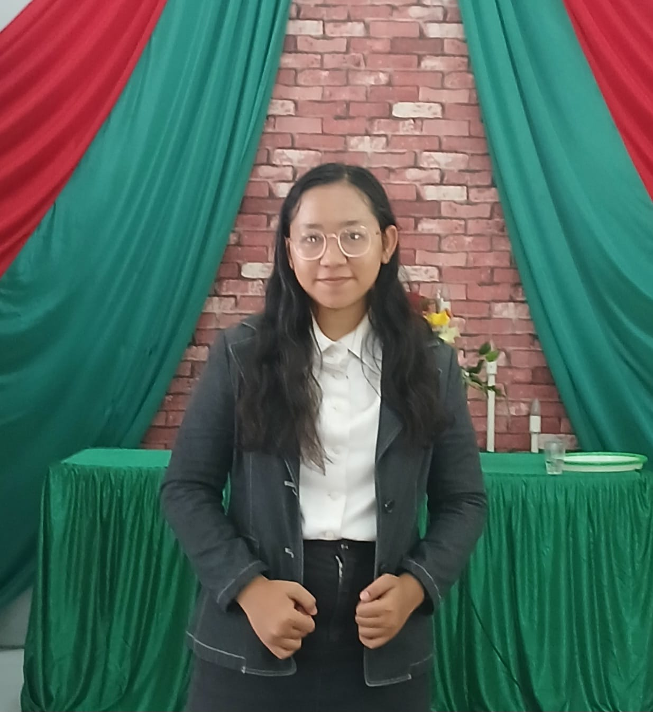

Delarosa Butar Butar
Translator
📇 Contacts
- 👤 Female
- 📆 May 7, 2005
- 📞 +62 895 3206 73540
- ✉️ delarosabutarbutar@gmail.com
- 📍 Wonosari Dusun XI No.001, Tanjung Morawa
🎯 Objective
Saya ingin mengembangkan kemampuan bahasa saya sebagai seorang Translator yang profesional dan mampu menjembatani komunikasi antarbahasa secara akurat dan efektif. Saya juga ingin memberikan kontribusi yang positif di tempat saya bekerja nantinya.
🧩 Skills
- 🌐 Language: Indonesia, Inggris, Jepang, Cina, Korea
- 🖥️ Computer: Word, Excel, PowerPoint